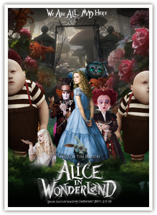

1. 豆瓣上对这部片子评价不高，大多数说它主题恶俗矫揉造作，这批评我同意。
1.5 但是主题恶俗不能抹杀艺术价值。前有红楼梦，后有阿凡达，都是例证。
2. 镜头多用极浅的景深，不知道是为了凸出立体感，还是摄影风格使然。
2.5 不过画面实在是漂亮。
3. 角色造型全都鲜活动人，除了人类。
3.5 特别是红桃皇后的面首，这个人物和全片的风格完全不搭。
4. Johnny Depp 和猫尬戏，我觉得猫赢了。
5. 我不能理解 Depp 的角色哪里值得主角喜欢。
6. 我可以接受 Hathaway 神神经经的，但是不理解为什么她的妆那么丑。
7. 我明白恶龙是个寓言，也明白主角为什么被告知「你只能自己面对它」。
7.5 我只是忍不住想，为什么她有勇气面对大航海，却没勇气面对相夫教子的生活呢？

April 25th, 2010 06:49
7.5 这个问题很容易理解啊。一个有勇气面对大航海却没勇气面对相夫教子的生活的女生的发言～
April 25th, 2010 07:07
这什么戏啊？爱丽丝怎么是大人呀？
7.5实在是太好理解了。我倒是奇怪木遥怎么会提这样的问题。
April 25th, 2010 07:13
@楼上两位
有时候问一个问题不是因为我真的不理解……
April 25th, 2010 10:00
木摇摇啊，你这样想……对于航海，这是一个始终可以充满新鲜感的东西；然而相夫教子却是日复一日的重复，再多的勇气都被磨光了。我觉得这种状况实在是太正常了……
April 25th, 2010 12:03
《爱丽丝》竟然还值几句话···
看完它我简直是飞奔离开电影院的·
April 25th, 2010 13:45
楼主评价下 avatar啊 哈哈
April 25th, 2010 13:47
还有这几句话风格 很逻辑哲学导论啊 但只是形似。。。
April 25th, 2010 18:58
7.5太好理解了，有的时候人无法接受一眼望到头的人生，另外航海可以带来内心一种澎湃的英雄主义与较之相夫教子妇女的优越感。
April 28th, 2010 08:29
我觉得吧，7.5的答案是：导演是男银。。。。
April 28th, 2010 20:27
1. 特别美和艺术性——这是我唯一理解并且支持的意见。。。
2. 主角什么时候“喜欢”mad hatter了，或者你的喜欢定义不一样？如果你是说要走的时候，那不是对那个角色的喜欢，是对那个地方和那段生活状态的整体的留恋罢了。（另外故事里面的mad hatter要真有johnny depp演那样深邃的忧伤眼神，我也喜欢……）
3. 景深没注意，看片子过程没想3d，这一点特好，“摄影重要的是情深不是景深”，我觉得avatar啥的就追求过了。
4. 最后，相夫教子，和没有勇气面对压根不搭嘎。
拒绝猥琐男不是没有勇气面对某种生活，是她认识到不管世界上有多少人妥协于命运，也没法让自己妥协于命运，仅此而已。先不说爱丽丝没到相夫教子的年纪，即使是成人，相夫教子这件事不是去追求的，只有航海梦想才是要去追求的一件事。在还没套上枷锁之前，一心一意追求自己梦想是多正常的事。
这么说吧，假设在航海过程中爱丽丝碰到一个合适的夫，也不说明她“有勇气面对相夫教子”了。
April 29th, 2010 01:35
我的意思是导演这么安排并不牵强。
April 29th, 2010 10:26
红楼梦主题恶俗？…………
May 5th, 2010 21:25
7.5 我只是忍不住想，为什么她有勇气面对大航海，却没勇气面对相夫教子的生活呢？
估计大家都对这种八卦感兴趣，我也不能免俗。这里给出原因和解决方案。
从事单调、重复性的工作是很容易疲劳的，谁都受不住，所以你可以观察高速公路的设计，景观是不会单调重复的，知道这个原理以后，就可以提出解决方案，就是如何调剂生活，很简单，让生活时刻充满惊喜就对了，比如我们可以定个家庭纪念日，去野外野餐，搞一个结婚纪念日，烛光晚餐之类的，发挥想象，不过要和你的经济条件相适应，每隔一段时间来一次，very nice！
May 8th, 2010 17:37
那个。。。
音乐是“The Snow”还是“The Show”?
像是写字的时候少写了一点，真有意思:)
May 10th, 2010 07:49
@Kan
我是猪……
May 10th, 2010 20:39
@木遥
您是苏格拉底